Points & Frogs
This document describes everything you need to know about points motors and frog polarisation. It contains an explanation about the parts of a point, what kind of motors there are, how can you can polarize the frogs to improve pickups and reliability and how you can set an entire route with a single button.
Points, also known as turnouts or switches, are the track
component sthat allows a train to move from one line to another.
It
is made up of several key parts:
Stock rails – the two outer running rails of the turnout.
Point blades (switch rails) – the movable rails that guide the train’s wheels either straight or onto the diverging track. They move together as a pair.
Frog – the part where the two routes intersect.
Closure rails – short connecting rails between the point blades and the frog.
Tie bar (or stretcher bar) – connects the two point blades so they move together when the turnout motor or lever operates.
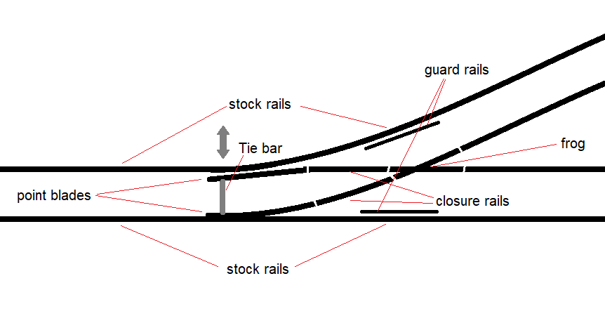
Usually one wants to control the turnout remotely. This can be done as easy as connecting a mechanial rod to the tie bar and to a lever. But most often we use an electrical point motor. There are various types of point motors.
The oldest and most well-known type is the double coil
drive.
It consists of two electromagnetic coils and a
movable iron core (often called an armature) connected to a sliding
bar. This sliding bar is usually connected to the tie bar of a point
with or without a spring mechanism.
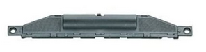
Figure
1: Fleischmann N gauge point drive
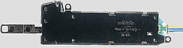
When a short pulse of current is sent through one of the
coils, the magnetic field pulls the armature to one side — moving
the point blades via the tie bar.
A pulse on the other coil
pulls it back the other way.
These drives are fast and powerful, but they require a
strong short pulse rather than continuous power, otherwise
the coils can burn out.
They also produce a sharp “click”
sound when operating — which some modellers love for its realism,
and others dislike for the noise.
Double coil motors are simple, durable, and easy to find,
but
their mechanical impact can cause wear on delicate turnout
mechanisms.
Some of the double coil drives, have mechanical limit switches. This allows one to switch a point using a continous voltage instead of a pulse. However these switches can eventually be damaged causing them to become a short. When this occures the motor drive may overheat and also dies. To protect the coils from overheating, most modellers use a capacitor discharge unit (CDU) to deliver one clean, safe pulse per operation. If a digital DCC decoder is used, the pulse time is also limited. A pulse of 30ms is usually already enough.
Another type of turnout drive is the point motor,
often referred to as a slow-motion motor.
Examples
include the Cobalt IP, MTB MP1/MP5,
OS-Vector, Tortoise, and many
others.
Unlike the fast, pulse-driven coil motors, these use a small
DC motor with a gearbox to slowly move the
point blades from one position to the other.
This creates a
realistic, smooth motion — similar to a real turnout in the field —
and puts much less stress on the tie bar and switch rails.
Inside the housing is a DC motor, a reduction
gear train, and a set of limit switches.
When
power is applied, the motor rotates until it reaches one of the limit
switches, which cuts the current and stops the motor
automatically.
Reversing the polarity makes the motor run in the
opposite direction and move the blades back.
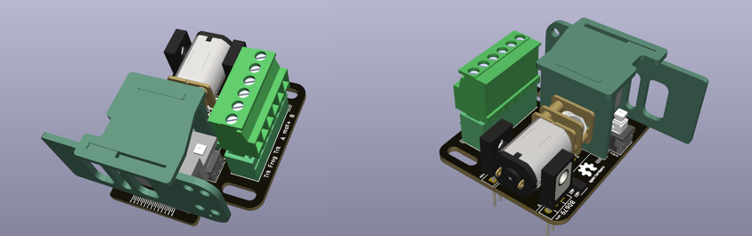
Figure
3: OS-Vector
In a two-wire system, the motor simply receives DC voltage with
reversed polarity to change direction.
You can
achieve this by:
A DPDT switch that swaps polarity, or
Two diodes and a control circuit that decides which direction to drive.
This is the simplest and most common method for analog layouts or when using digital accessory decoders designed for slow-motion motors.
The advantage of two-wire control is that you just need 2 wires. And besides the limit switches, only 2 diodes are needed for this to work
The disadvantage is that the switch need to be a double pole one, because it needs to invert the polaritiy. You also need to use extra electronics to connect such a motor to a decoder
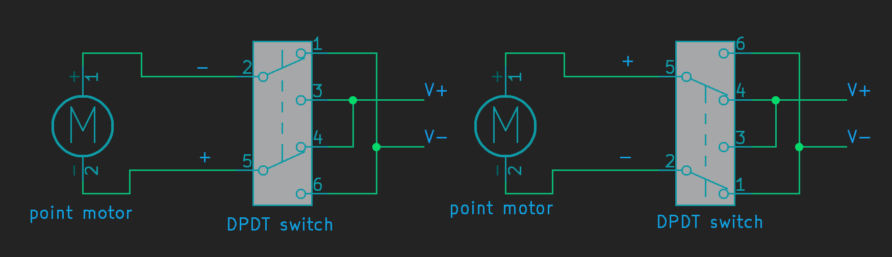
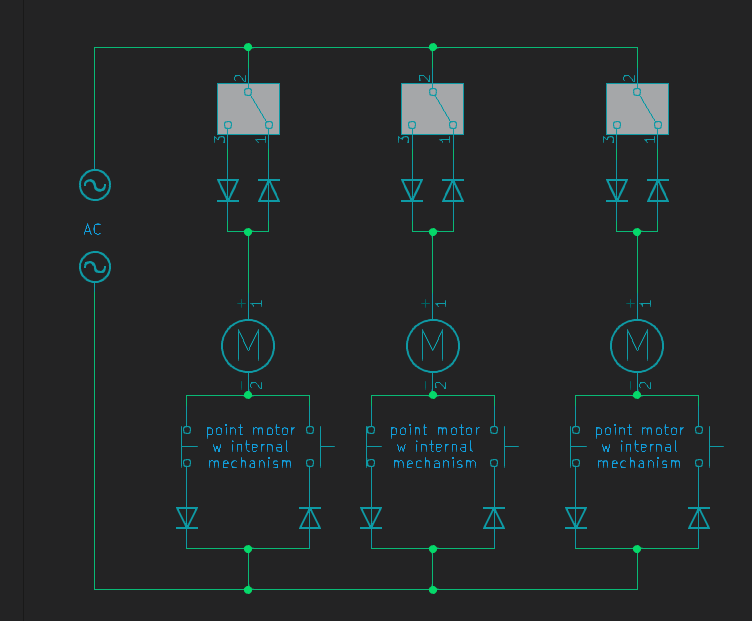
How it works:
Scenario 1: the motor is in idle mode. If you follow the path of the switches and diodes, you can see that no current is able to turn through. One direction is blocked by diodes, the other direction is blocked by a limit switcb
Scenario 2: the switch is thrown. Current can now flow through the upper diode, through the motor. back to the voltage source.
Scenario 3: The motor has reached it's limit switch. Like in scenario 1, the current is now blocked by this limit switch. The motor is idle, but in the other direction.
Scenario 4: The switch is thrown again. Now current can flow again but this time it is in the other direction. The situtation will remain until the other limit switch breaks the circuit. Then we are back in scenario 1 again
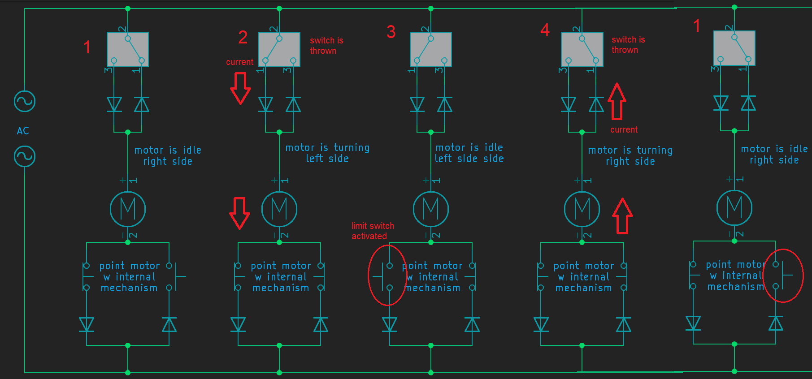
Some motors (like the MTB MP1 or earlier designs) use three
wires:
one common positive and two direction
inputs.
Each input powers the motor in one direction
through internal diodes —
this allows electronic switching
with simple transistors or relays, without needing to reverse the
supply polarity.
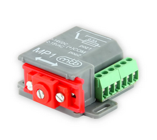
Figure
7: MTB MP1
The advantage of three wire control is that this is compatible with most types of digital decoders. Where two-wire control is not. You can also use a single pole double throw switch instead of a double pole variant.
The disadvantage is that such a motor uses a little bit more electronics, and there is a 3rd wire involved.
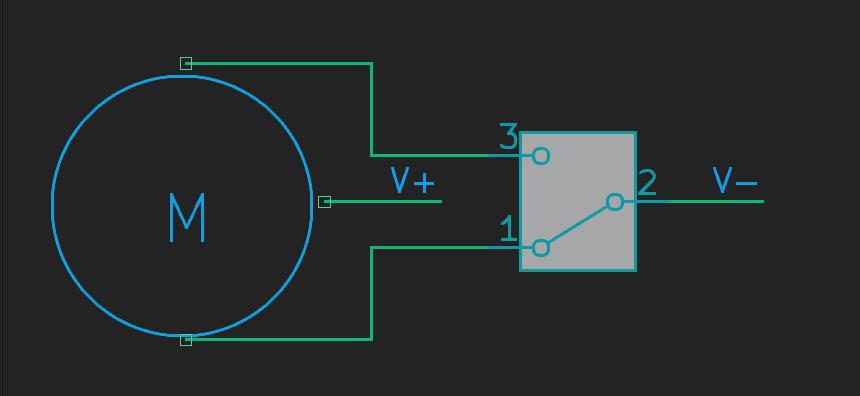
Figure 8: wiring of
Three wire point motor
A servo motor is a small, lightweight actuator
widely used in model railways for turnout control.
Originally
developed for radio-controlled models, servos are inexpensive,
precise, and easy to control electronically.
A servo contains three parts inside:
A DC motor,
A gearbox, and
A position feedback potentiometer connected to the output shaft.
The internal electronics continuously compare the commanded
position with the actual position, and drive the motor until both
match.
This feedback makes the servo extremely accurate —
ideal for the delicate movement of point blades.
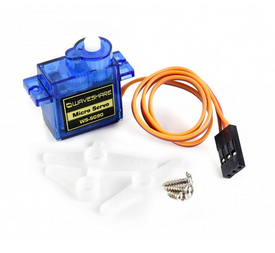
Figure
9: SG90s servo motor
A servo is driven by a control signal, not by
direct power polarity.
It uses a short, repeating control pulse
that tells the internal electronics what position to move to.
Unlike
DC or AC drives, the servo always receives a constant power
supply,
and the signal line defines the desired position.
Very slow, realistic motion — the movement speed can be adjusted in software.
Precise positioning — you can fine-tune the end points, even for non-standard turnouts.
Compact and lightweight — can be installed under or beside the track.
Quiet operation — no clicking or mechanical impact.
Flexible control — can be driven by microcontrollers or servo decoders.
Servos need a continuous control signal — if it stops, the servo may drift or buzz.
Cheap servos can jitter if powered by noisy supplies.
They require some form of controller or decoder to generate the control pulses; you can’t operate them directly with a simple switch.
Despite these points, servos are extremely popular because of their versatility and realism.
Besides motors and drives used to move points, there is another important concept to understand, called frog polarization.
In short: specifically for 2-rail layouts, it is sometimes necessary to polarize the frog of a point. The frog of a point is then electrically connected either to one rail or to the other, depending on whether the point is set to straight or diverging. The purpose is to improve current collection over the point so that even small 2-axle locomotives can crawl over it without stalling. Whether this is necessary depends on the type of point. There are insulfrogs, unifrogs, and electrofrogs. (“Frog” is the English term for puntstuk.)
With an insulfrog, the frog is non-conductive. They are often made of plastic, but metal insulfrogs also exist. An insulfrog simply cannot be polarized easily. The advice is: if you run many small 2-axle locomotives, avoid using this type of points.
Figure
10: insulfrog schematic
It is possible to modify such a point to
become an unifrog. People have had good results by applying conductig
paint over the frog. There are ways.
With a unifrog, the frog is completely insulated just like with an insulfrog, but it is conductive and usually has a solder tab for polarization. This type of point is designed to be polarized, and you should do so.
Unifrogs are easiest to polarize using a single relay that connects the frog to either one rail or the other.
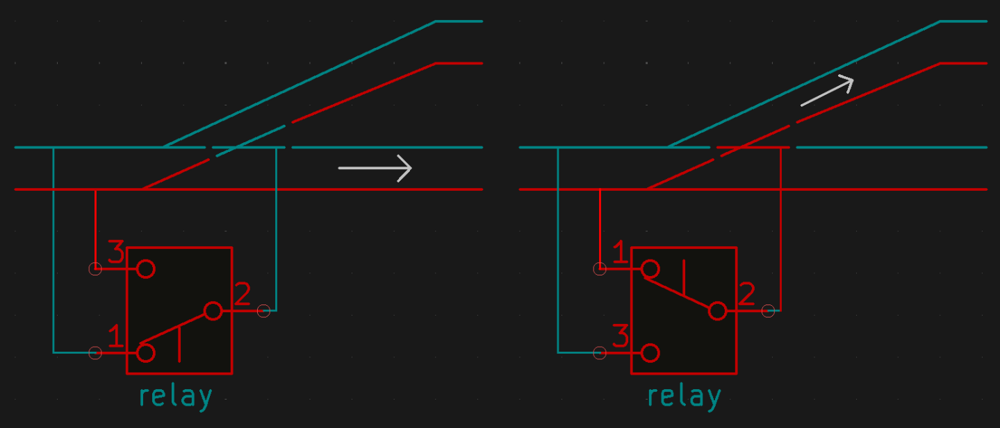
Figure
11: unifrog schematic
Another option is to use a so-called frog juicer. This is a small and clever device that works based on short-circuit detection. A frog juicer continuously monitors the frog, and when it detects a short, it reverses the polarity faster than you can blink — in the order of microseconds. Frog juicers, however, are a relatively expensive solution.
Some point motors have built-in mechanical frog polarization. This is often found in modern motors, but some older solenoid drives also included this feature.
With an electrofrog, the frog and both point blades are electrically connected to each other. The frog is powered by one of the two blades, depending on which one is pressed against its stock rail. To ensure this works, a small spring is often built into the point to keep the blades pressed firmly against either one rail or the other.
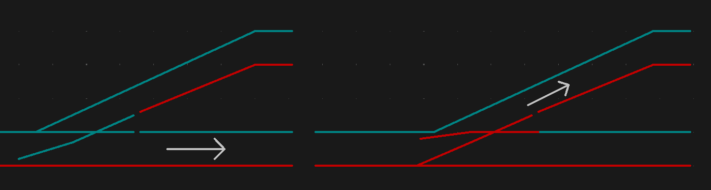
Figure
12: electrofrog schematoc
The advantage is that you already have frog polarization without any modification. However, over time and with dirt, the contact between the blade and the rail can become unreliable. Painting the rails can also interfere with conductivity. For these reasons, people often choose to polarize these points anyway. Some even remove the spring because it makes a clicking noise — but then the blades may no longer press firmly against the rails.
The easiest way to add extra frog polarization to an electrofrog is again by using a frog juicer, since they always work reliably.
Polarizing with a single relay is possible but risky. When using one relay, the frog is permanently connected to either one rail or the other. This means the relay can only switch safely when the blades are exactly halfway through their movement. For example, most servo decoders switches their relay precisely halfway through the servo travel for this reason. If the relay switches too early, while the blades are still touching the rails, you get an instant short circuit. And if the motor has moved while the system was off, a short circuit can also occur.
A safer method is to use two relays. This allows a decoder to first disconnect the frog, move the blades, and then reconnect the frog with the correct polarity. This method is implemented in OS-decoders
Even for electrofrogs, you can sometimes use certain point motors for polarization. Make sure to check whether the specific motor briefly disconnects the frog during switching. Many motors have mechanical contacts built in for this purpose.
You can also look for a mechanical solution to handle frog polarization, allowing you to use cheaper servos. For example, various servo brackets are available that make it easy to attach small switches for this purpose.